-
Login into portal
5:14:45 pm / 00:00:21:772 Pass
Login into portal
04.11.2024 5:14:45 pm 04.11.2024 5:15:07 pm 00:00:21:772 · #test-id=1PassUser login with invalid username and passwordGiven User is on LoginPagehooks.CucumberHooks.takeScrenshot(io.cucumber.java.Scenario)image When User enter invalid credentialshooks.CucumberHooks.takeScrenshot(io.cucumber.java.Scenario)imageAnd click on Login buttonhooks.CucumberHooks.takeScrenshot(io.cucumber.java.Scenario)image
When User enter invalid credentialshooks.CucumberHooks.takeScrenshot(io.cucumber.java.Scenario)imageAnd click on Login buttonhooks.CucumberHooks.takeScrenshot(io.cucumber.java.Scenario)image Then User gets "Invalid credentials" message and access to portal is deniedhooks.CucumberHooks.takeScrenshot(io.cucumber.java.Scenario)image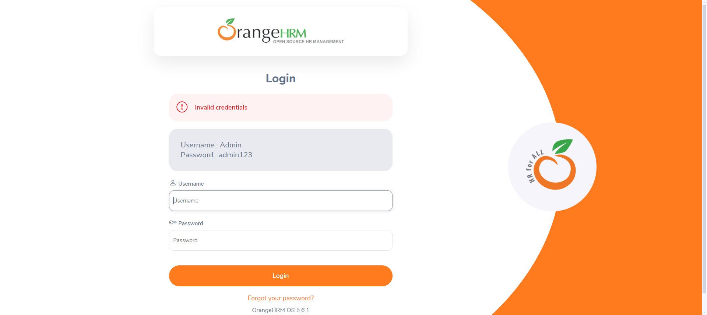PassUser login with valid username and passwordGiven User is on LoginPagehooks.CucumberHooks.takeScrenshot(io.cucumber.java.Scenario)image
Then User gets "Invalid credentials" message and access to portal is deniedhooks.CucumberHooks.takeScrenshot(io.cucumber.java.Scenario)image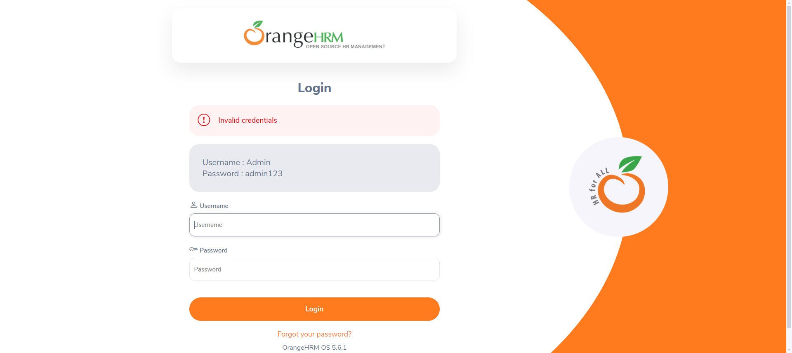PassUser login with valid username and passwordGiven User is on LoginPagehooks.CucumberHooks.takeScrenshot(io.cucumber.java.Scenario)image When User enter valid username and passwordhooks.CucumberHooks.takeScrenshot(io.cucumber.java.Scenario)imageAnd click on Login buttonhooks.CucumberHooks.takeScrenshot(io.cucumber.java.Scenario)image
When User enter valid username and passwordhooks.CucumberHooks.takeScrenshot(io.cucumber.java.Scenario)imageAnd click on Login buttonhooks.CucumberHooks.takeScrenshot(io.cucumber.java.Scenario)image Then User is redirected to Homepage of OrangeHRMhooks.CucumberHooks.takeScrenshot(io.cucumber.java.Scenario)image
Then User is redirected to Homepage of OrangeHRMhooks.CucumberHooks.takeScrenshot(io.cucumber.java.Scenario)image
-
Leave Page
5:15:07 pm / 00:02:44:050 Fail
Leave Page
04.11.2024 5:15:07 pm 04.11.2024 5:17:51 pm 00:02:44:050 · #test-id=26PassSearch LeaveGiven User is on LoginPagehooks.CucumberHooks.takeScrenshot(io.cucumber.java.Scenario)image When User enter valid username and passwordhooks.CucumberHooks.takeScrenshot(io.cucumber.java.Scenario)image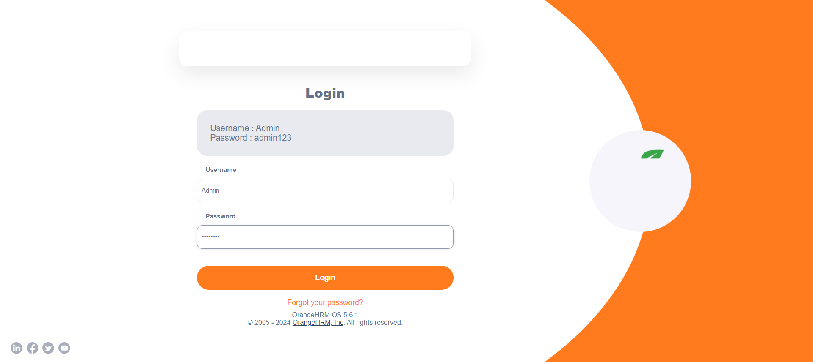And click on Login buttonhooks.CucumberHooks.takeScrenshot(io.cucumber.java.Scenario)image
When User enter valid username and passwordhooks.CucumberHooks.takeScrenshot(io.cucumber.java.Scenario)image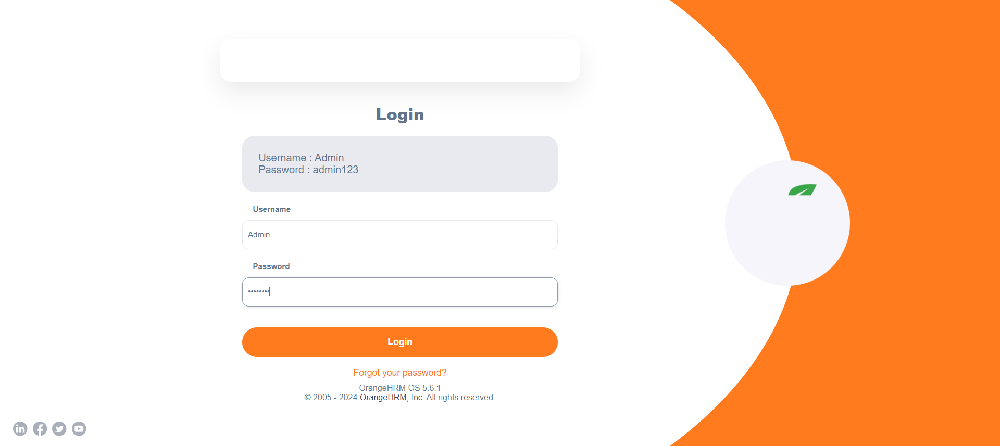And click on Login buttonhooks.CucumberHooks.takeScrenshot(io.cucumber.java.Scenario)image Then User is redirected to Homepage of OrangeHRMhooks.CucumberHooks.takeScrenshot(io.cucumber.java.Scenario)image
Then User is redirected to Homepage of OrangeHRMhooks.CucumberHooks.takeScrenshot(io.cucumber.java.Scenario)image Given I am on the dashboard pagehooks.CucumberHooks.takeScrenshot(io.cucumber.java.Scenario)imageWhen I click on the Leave tabhooks.CucumberHooks.takeScrenshot(io.cucumber.java.Scenario)image
Given I am on the dashboard pagehooks.CucumberHooks.takeScrenshot(io.cucumber.java.Scenario)imageWhen I click on the Leave tabhooks.CucumberHooks.takeScrenshot(io.cucumber.java.Scenario)image And I click on the My Leave optionhooks.CucumberHooks.takeScrenshot(io.cucumber.java.Scenario)image
And I click on the My Leave optionhooks.CucumberHooks.takeScrenshot(io.cucumber.java.Scenario)image Then I should see the My Leave List pagehooks.CucumberHooks.takeScrenshot(io.cucumber.java.Scenario)image
Then I should see the My Leave List pagehooks.CucumberHooks.takeScrenshot(io.cucumber.java.Scenario)image When I fill out the Serach Leave form with valid datahooks.CucumberHooks.takeScrenshot(io.cucumber.java.Scenario)image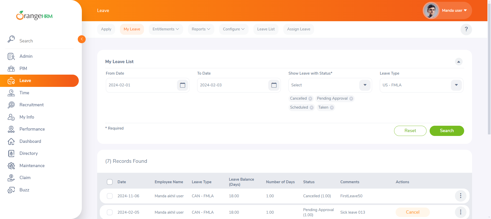And Click on Search buttonhooks.CucumberHooks.takeScrenshot(io.cucumber.java.Scenario)image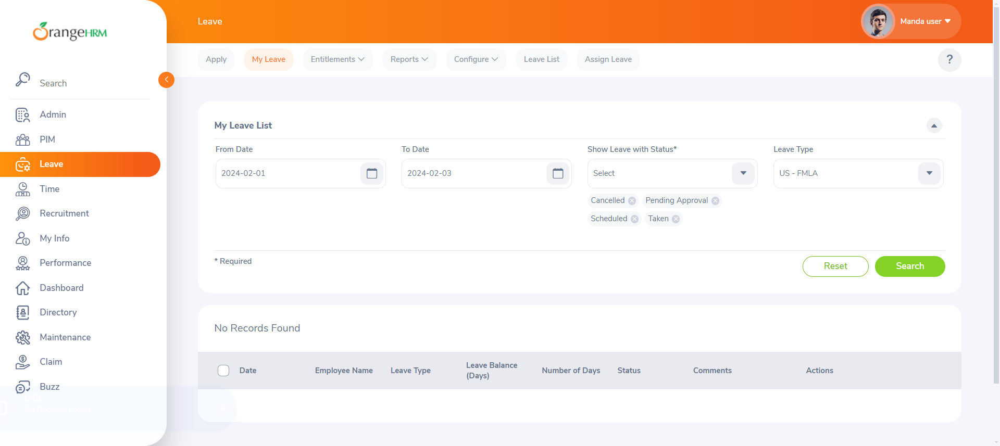Then I should see the leave recordshooks.CucumberHooks.takeScrenshot(io.cucumber.java.Scenario)image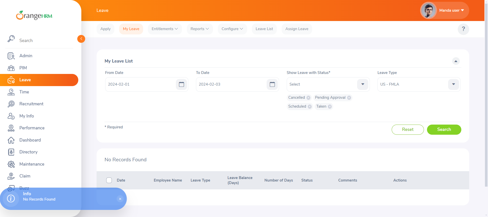PassEntering valid From date and To datePassEntering valid From date and To dateGiven User is on LoginPagehooks.CucumberHooks.takeScrenshot(io.cucumber.java.Scenario)image
When I fill out the Serach Leave form with valid datahooks.CucumberHooks.takeScrenshot(io.cucumber.java.Scenario)image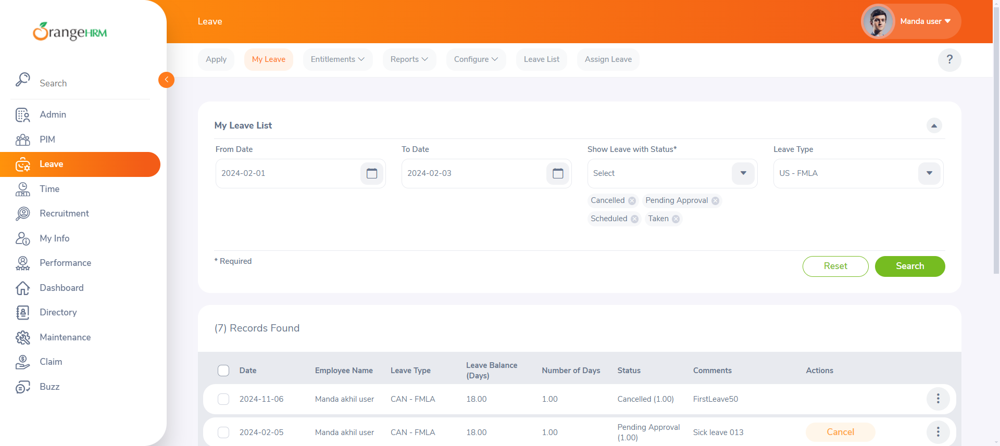And Click on Search buttonhooks.CucumberHooks.takeScrenshot(io.cucumber.java.Scenario)image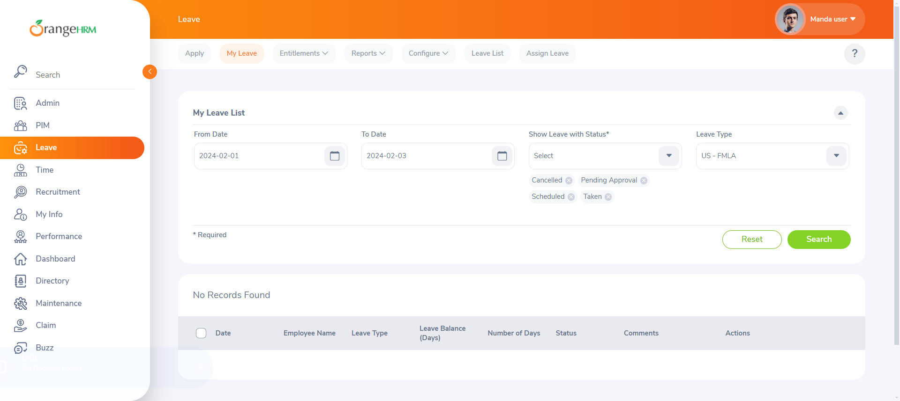Then I should see the leave recordshooks.CucumberHooks.takeScrenshot(io.cucumber.java.Scenario)image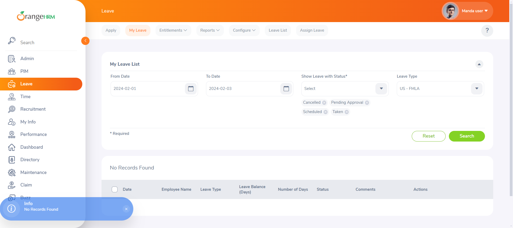PassEntering valid From date and To datePassEntering valid From date and To dateGiven User is on LoginPagehooks.CucumberHooks.takeScrenshot(io.cucumber.java.Scenario)image When User enter valid username and passwordhooks.CucumberHooks.takeScrenshot(io.cucumber.java.Scenario)imageAnd click on Login buttonhooks.CucumberHooks.takeScrenshot(io.cucumber.java.Scenario)image
When User enter valid username and passwordhooks.CucumberHooks.takeScrenshot(io.cucumber.java.Scenario)imageAnd click on Login buttonhooks.CucumberHooks.takeScrenshot(io.cucumber.java.Scenario)image Then User is redirected to Homepage of OrangeHRMhooks.CucumberHooks.takeScrenshot(io.cucumber.java.Scenario)image
Then User is redirected to Homepage of OrangeHRMhooks.CucumberHooks.takeScrenshot(io.cucumber.java.Scenario)image Given I am on the dashboard pagehooks.CucumberHooks.takeScrenshot(io.cucumber.java.Scenario)imageWhen I click on the Leave tabhooks.CucumberHooks.takeScrenshot(io.cucumber.java.Scenario)image
Given I am on the dashboard pagehooks.CucumberHooks.takeScrenshot(io.cucumber.java.Scenario)imageWhen I click on the Leave tabhooks.CucumberHooks.takeScrenshot(io.cucumber.java.Scenario)image And I click on the My Leave optionhooks.CucumberHooks.takeScrenshot(io.cucumber.java.Scenario)image
And I click on the My Leave optionhooks.CucumberHooks.takeScrenshot(io.cucumber.java.Scenario)image Then I should see the My Leave List pagehooks.CucumberHooks.takeScrenshot(io.cucumber.java.Scenario)image
Then I should see the My Leave List pagehooks.CucumberHooks.takeScrenshot(io.cucumber.java.Scenario)image When I Enter a From date of "2022-01-01" and To date of "2022-01-31" from the date pickerhooks.CucumberHooks.takeScrenshot(io.cucumber.java.Scenario)imageThen I should see the enterd date rangehooks.CucumberHooks.takeScrenshot(io.cucumber.java.Scenario)imagePassEntering valid From date and To dateGiven User is on LoginPagehooks.CucumberHooks.takeScrenshot(io.cucumber.java.Scenario)image
When I Enter a From date of "2022-01-01" and To date of "2022-01-31" from the date pickerhooks.CucumberHooks.takeScrenshot(io.cucumber.java.Scenario)imageThen I should see the enterd date rangehooks.CucumberHooks.takeScrenshot(io.cucumber.java.Scenario)imagePassEntering valid From date and To dateGiven User is on LoginPagehooks.CucumberHooks.takeScrenshot(io.cucumber.java.Scenario)image When User enter valid username and passwordhooks.CucumberHooks.takeScrenshot(io.cucumber.java.Scenario)imageAnd click on Login buttonhooks.CucumberHooks.takeScrenshot(io.cucumber.java.Scenario)image
When User enter valid username and passwordhooks.CucumberHooks.takeScrenshot(io.cucumber.java.Scenario)imageAnd click on Login buttonhooks.CucumberHooks.takeScrenshot(io.cucumber.java.Scenario)image Then User is redirected to Homepage of OrangeHRMhooks.CucumberHooks.takeScrenshot(io.cucumber.java.Scenario)image
Then User is redirected to Homepage of OrangeHRMhooks.CucumberHooks.takeScrenshot(io.cucumber.java.Scenario)image Given I am on the dashboard pagehooks.CucumberHooks.takeScrenshot(io.cucumber.java.Scenario)imageWhen I click on the Leave tabhooks.CucumberHooks.takeScrenshot(io.cucumber.java.Scenario)image
Given I am on the dashboard pagehooks.CucumberHooks.takeScrenshot(io.cucumber.java.Scenario)imageWhen I click on the Leave tabhooks.CucumberHooks.takeScrenshot(io.cucumber.java.Scenario)image And I click on the My Leave optionhooks.CucumberHooks.takeScrenshot(io.cucumber.java.Scenario)image
And I click on the My Leave optionhooks.CucumberHooks.takeScrenshot(io.cucumber.java.Scenario)image Then I should see the My Leave List pagehooks.CucumberHooks.takeScrenshot(io.cucumber.java.Scenario)image
Then I should see the My Leave List pagehooks.CucumberHooks.takeScrenshot(io.cucumber.java.Scenario)image When I Enter a From date of "2022-02-01" and To date of "2022-02-28" from the date pickerhooks.CucumberHooks.takeScrenshot(io.cucumber.java.Scenario)imageThen I should see the enterd date rangehooks.CucumberHooks.takeScrenshot(io.cucumber.java.Scenario)imagePassEntering valid From date and To dateGiven User is on LoginPagehooks.CucumberHooks.takeScrenshot(io.cucumber.java.Scenario)image
When I Enter a From date of "2022-02-01" and To date of "2022-02-28" from the date pickerhooks.CucumberHooks.takeScrenshot(io.cucumber.java.Scenario)imageThen I should see the enterd date rangehooks.CucumberHooks.takeScrenshot(io.cucumber.java.Scenario)imagePassEntering valid From date and To dateGiven User is on LoginPagehooks.CucumberHooks.takeScrenshot(io.cucumber.java.Scenario)image When User enter valid username and passwordhooks.CucumberHooks.takeScrenshot(io.cucumber.java.Scenario)imageAnd click on Login buttonhooks.CucumberHooks.takeScrenshot(io.cucumber.java.Scenario)image
When User enter valid username and passwordhooks.CucumberHooks.takeScrenshot(io.cucumber.java.Scenario)imageAnd click on Login buttonhooks.CucumberHooks.takeScrenshot(io.cucumber.java.Scenario)image Then User is redirected to Homepage of OrangeHRMhooks.CucumberHooks.takeScrenshot(io.cucumber.java.Scenario)image
Then User is redirected to Homepage of OrangeHRMhooks.CucumberHooks.takeScrenshot(io.cucumber.java.Scenario)image Given I am on the dashboard pagehooks.CucumberHooks.takeScrenshot(io.cucumber.java.Scenario)imageWhen I click on the Leave tabhooks.CucumberHooks.takeScrenshot(io.cucumber.java.Scenario)image
Given I am on the dashboard pagehooks.CucumberHooks.takeScrenshot(io.cucumber.java.Scenario)imageWhen I click on the Leave tabhooks.CucumberHooks.takeScrenshot(io.cucumber.java.Scenario)image And I click on the My Leave optionhooks.CucumberHooks.takeScrenshot(io.cucumber.java.Scenario)image
And I click on the My Leave optionhooks.CucumberHooks.takeScrenshot(io.cucumber.java.Scenario)image Then I should see the My Leave List pagehooks.CucumberHooks.takeScrenshot(io.cucumber.java.Scenario)image
Then I should see the My Leave List pagehooks.CucumberHooks.takeScrenshot(io.cucumber.java.Scenario)image When I Enter a From date of "2022-03-01" and To date of "2022-03-31" from the date pickerhooks.CucumberHooks.takeScrenshot(io.cucumber.java.Scenario)image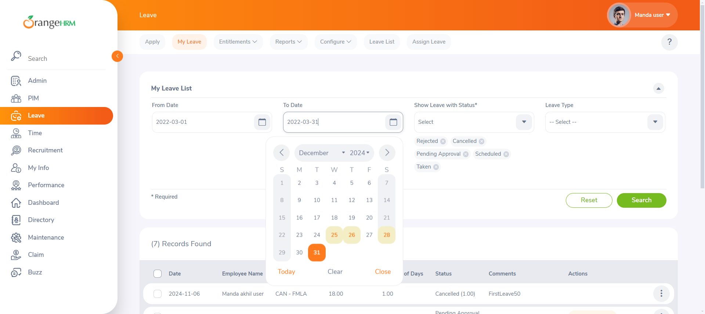Then I should see the enterd date rangehooks.CucumberHooks.takeScrenshot(io.cucumber.java.Scenario)imageFailEntering invalid From date and To dateGiven User is on LoginPagehooks.CucumberHooks.takeScrenshot(io.cucumber.java.Scenario)image
When I Enter a From date of "2022-03-01" and To date of "2022-03-31" from the date pickerhooks.CucumberHooks.takeScrenshot(io.cucumber.java.Scenario)image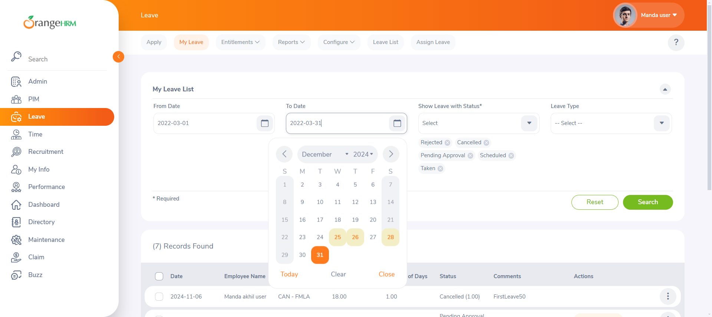Then I should see the enterd date rangehooks.CucumberHooks.takeScrenshot(io.cucumber.java.Scenario)imageFailEntering invalid From date and To dateGiven User is on LoginPagehooks.CucumberHooks.takeScrenshot(io.cucumber.java.Scenario)image When User enter valid username and passwordhooks.CucumberHooks.takeScrenshot(io.cucumber.java.Scenario)image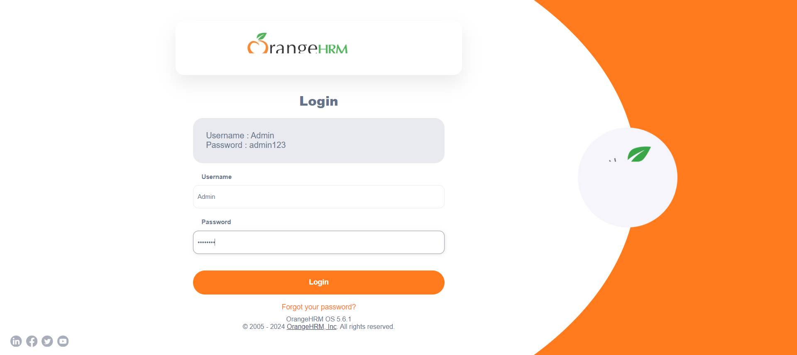And click on Login buttonhooks.CucumberHooks.takeScrenshot(io.cucumber.java.Scenario)image
When User enter valid username and passwordhooks.CucumberHooks.takeScrenshot(io.cucumber.java.Scenario)image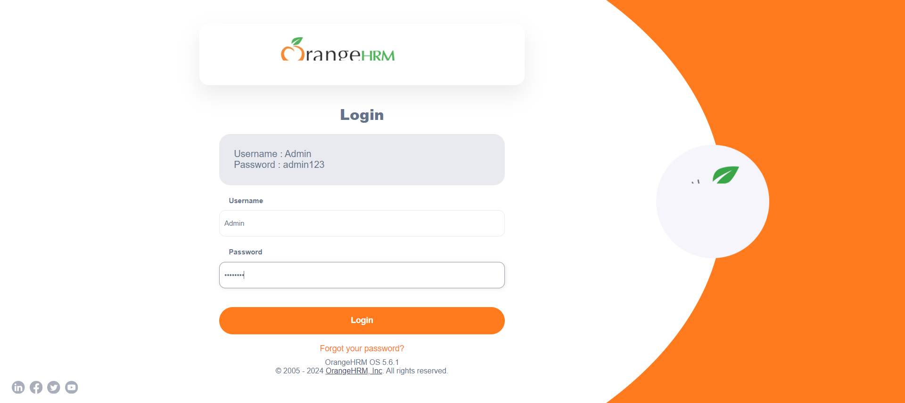And click on Login buttonhooks.CucumberHooks.takeScrenshot(io.cucumber.java.Scenario)image Then User is redirected to Homepage of OrangeHRMhooks.CucumberHooks.takeScrenshot(io.cucumber.java.Scenario)image
Then User is redirected to Homepage of OrangeHRMhooks.CucumberHooks.takeScrenshot(io.cucumber.java.Scenario)image Given I am on the dashboard pagehooks.CucumberHooks.takeScrenshot(io.cucumber.java.Scenario)image
Given I am on the dashboard pagehooks.CucumberHooks.takeScrenshot(io.cucumber.java.Scenario)image When I click on the Leave tabhooks.CucumberHooks.takeScrenshot(io.cucumber.java.Scenario)image
When I click on the Leave tabhooks.CucumberHooks.takeScrenshot(io.cucumber.java.Scenario)image And I click on the My Leave optionhooks.CucumberHooks.takeScrenshot(io.cucumber.java.Scenario)image
And I click on the My Leave optionhooks.CucumberHooks.takeScrenshot(io.cucumber.java.Scenario)image Then I should see the My Leave List pagehooks.CucumberHooks.takeScrenshot(io.cucumber.java.Scenario)image
Then I should see the My Leave List pagehooks.CucumberHooks.takeScrenshot(io.cucumber.java.Scenario)image When I Enter invalid input From date of "ifrom_date" and To date of "ito_date" from the date pickerhooks.CucumberHooks.takeScrenshot(io.cucumber.java.Scenario)image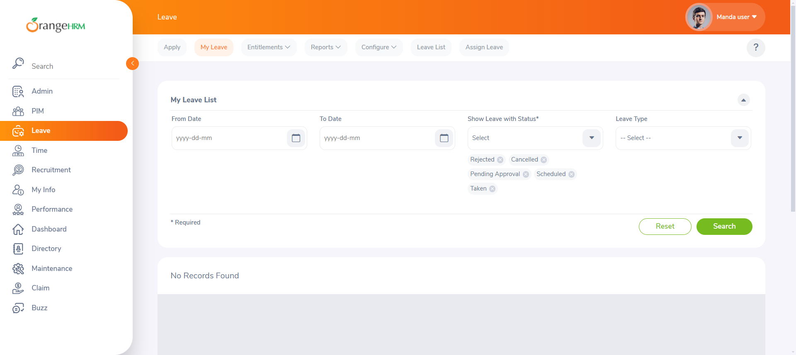Then I should see an error message
When I Enter invalid input From date of "ifrom_date" and To date of "ito_date" from the date pickerhooks.CucumberHooks.takeScrenshot(io.cucumber.java.Scenario)image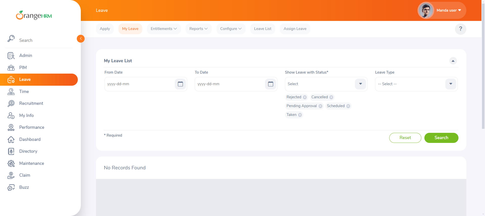Then I should see an error messageifrom_date ito_date expectedErrorMessage 2022-25-02 Required 2022-25-02 Required 2024/10/01 2024/29/02 Should be a valid date in yyyy-dd-mm format 20-01-2024 20-02-2024 Should be a valid date in yyyy-dd-mm format hooks.CucumberHooks.takeScrenshot(io.cucumber.java.Scenario)image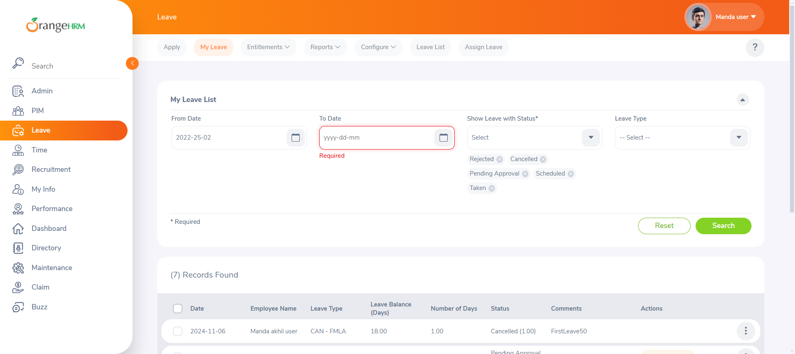PassShow Leave with Status is not SelectedGiven User is on LoginPagehooks.CucumberHooks.takeScrenshot(io.cucumber.java.Scenario)image When User enter valid username and passwordhooks.CucumberHooks.takeScrenshot(io.cucumber.java.Scenario)imageAnd click on Login buttonhooks.CucumberHooks.takeScrenshot(io.cucumber.java.Scenario)image
When User enter valid username and passwordhooks.CucumberHooks.takeScrenshot(io.cucumber.java.Scenario)imageAnd click on Login buttonhooks.CucumberHooks.takeScrenshot(io.cucumber.java.Scenario)image Then User is redirected to Homepage of OrangeHRMhooks.CucumberHooks.takeScrenshot(io.cucumber.java.Scenario)image
Then User is redirected to Homepage of OrangeHRMhooks.CucumberHooks.takeScrenshot(io.cucumber.java.Scenario)image Given I am on the dashboard pagehooks.CucumberHooks.takeScrenshot(io.cucumber.java.Scenario)imageWhen I click on the Leave tabhooks.CucumberHooks.takeScrenshot(io.cucumber.java.Scenario)image
Given I am on the dashboard pagehooks.CucumberHooks.takeScrenshot(io.cucumber.java.Scenario)imageWhen I click on the Leave tabhooks.CucumberHooks.takeScrenshot(io.cucumber.java.Scenario)image And I click on the My Leave optionhooks.CucumberHooks.takeScrenshot(io.cucumber.java.Scenario)image
And I click on the My Leave optionhooks.CucumberHooks.takeScrenshot(io.cucumber.java.Scenario)image Then I should see the My Leave List pagehooks.CucumberHooks.takeScrenshot(io.cucumber.java.Scenario)image
Then I should see the My Leave List pagehooks.CucumberHooks.takeScrenshot(io.cucumber.java.Scenario)image When I not select any leave statushooks.CucumberHooks.takeScrenshot(io.cucumber.java.Scenario)image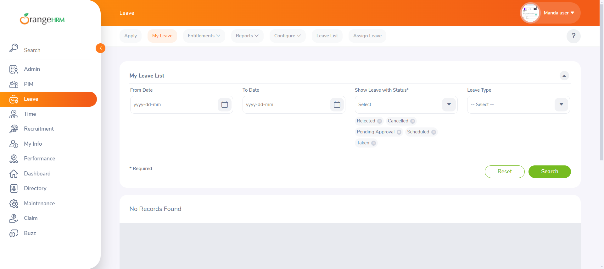Then I should get an error message.hooks.CucumberHooks.takeScrenshot(io.cucumber.java.Scenario)image
When I not select any leave statushooks.CucumberHooks.takeScrenshot(io.cucumber.java.Scenario)image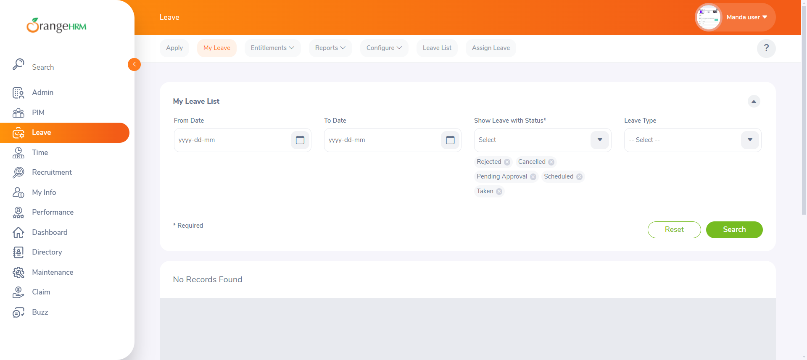Then I should get an error message.hooks.CucumberHooks.takeScrenshot(io.cucumber.java.Scenario)image
-
Leave List
5:17:51 pm / 00:00:32:556 Pass
Leave List
04.11.2024 5:17:51 pm 04.11.2024 5:18:23 pm 00:00:32:556 · #test-id=174PassSearch leave list recordsGiven User is on LoginPagehooks.CucumberHooks.takeScrenshot(io.cucumber.java.Scenario)image When User enter valid username and passwordhooks.CucumberHooks.takeScrenshot(io.cucumber.java.Scenario)image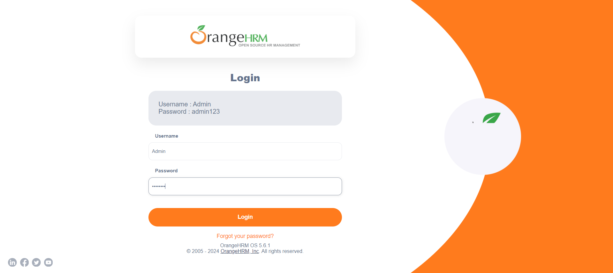And click on Login buttonhooks.CucumberHooks.takeScrenshot(io.cucumber.java.Scenario)image
When User enter valid username and passwordhooks.CucumberHooks.takeScrenshot(io.cucumber.java.Scenario)image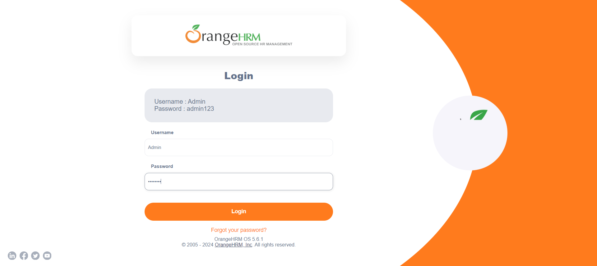And click on Login buttonhooks.CucumberHooks.takeScrenshot(io.cucumber.java.Scenario)image Then User is redirected to Homepage of OrangeHRMhooks.CucumberHooks.takeScrenshot(io.cucumber.java.Scenario)image
Then User is redirected to Homepage of OrangeHRMhooks.CucumberHooks.takeScrenshot(io.cucumber.java.Scenario)image Given I am on the dashboard pagehooks.CucumberHooks.takeScrenshot(io.cucumber.java.Scenario)imageWhen I click on the Leave tabhooks.CucumberHooks.takeScrenshot(io.cucumber.java.Scenario)image
Given I am on the dashboard pagehooks.CucumberHooks.takeScrenshot(io.cucumber.java.Scenario)imageWhen I click on the Leave tabhooks.CucumberHooks.takeScrenshot(io.cucumber.java.Scenario)image And I click on the My Leave optionhooks.CucumberHooks.takeScrenshot(io.cucumber.java.Scenario)image
And I click on the My Leave optionhooks.CucumberHooks.takeScrenshot(io.cucumber.java.Scenario)image Then I should see the My Leave List pagehooks.CucumberHooks.takeScrenshot(io.cucumber.java.Scenario)image
Then I should see the My Leave List pagehooks.CucumberHooks.takeScrenshot(io.cucumber.java.Scenario)image When I fill out the Leave list form with valid datahooks.CucumberHooks.takeScrenshot(io.cucumber.java.Scenario)imageAnd Click on Search buttonhooks.CucumberHooks.takeScrenshot(io.cucumber.java.Scenario)image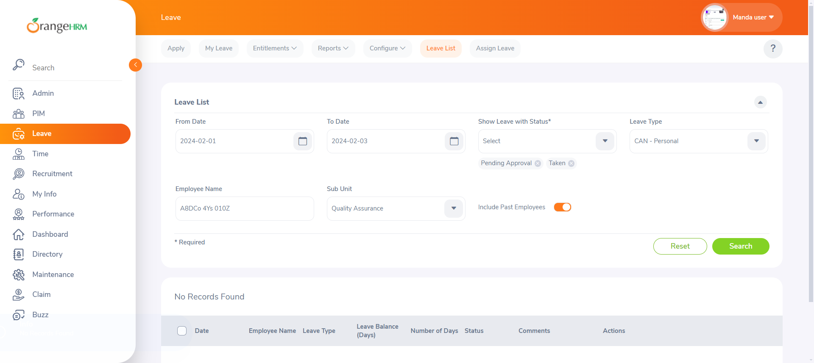Then I should see the leave list recordshooks.CucumberHooks.takeScrenshot(io.cucumber.java.Scenario)image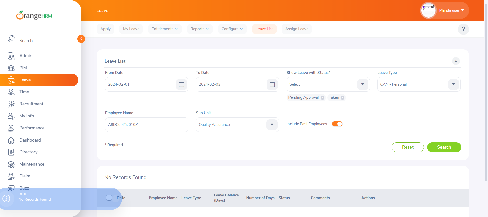PassSearch leave list records with out enter nameGiven User is on LoginPagehooks.CucumberHooks.takeScrenshot(io.cucumber.java.Scenario)image
When I fill out the Leave list form with valid datahooks.CucumberHooks.takeScrenshot(io.cucumber.java.Scenario)imageAnd Click on Search buttonhooks.CucumberHooks.takeScrenshot(io.cucumber.java.Scenario)image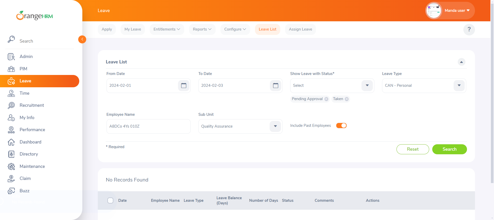Then I should see the leave list recordshooks.CucumberHooks.takeScrenshot(io.cucumber.java.Scenario)image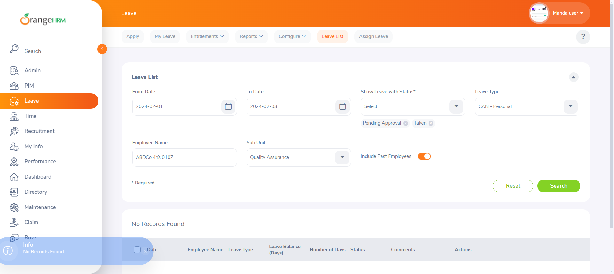PassSearch leave list records with out enter nameGiven User is on LoginPagehooks.CucumberHooks.takeScrenshot(io.cucumber.java.Scenario)image When User enter valid username and passwordhooks.CucumberHooks.takeScrenshot(io.cucumber.java.Scenario)image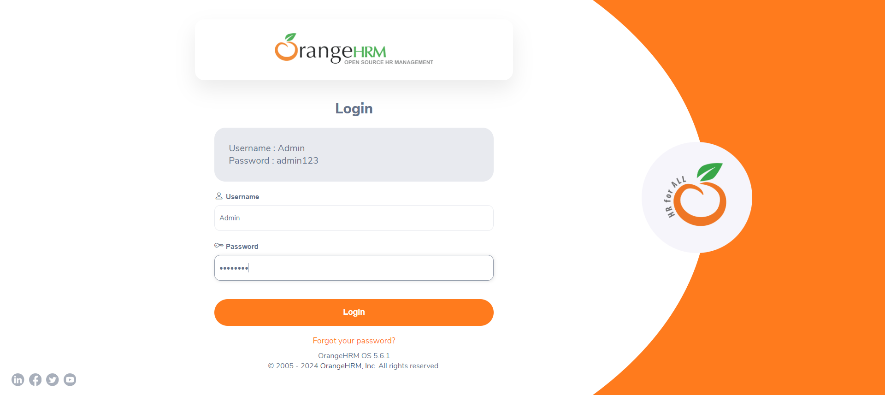And click on Login buttonhooks.CucumberHooks.takeScrenshot(io.cucumber.java.Scenario)image
When User enter valid username and passwordhooks.CucumberHooks.takeScrenshot(io.cucumber.java.Scenario)image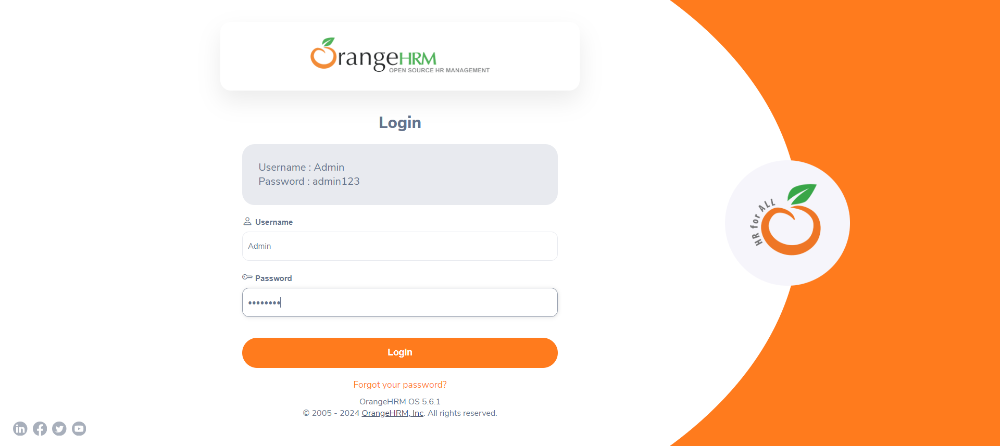And click on Login buttonhooks.CucumberHooks.takeScrenshot(io.cucumber.java.Scenario)image Then User is redirected to Homepage of OrangeHRMhooks.CucumberHooks.takeScrenshot(io.cucumber.java.Scenario)image
Then User is redirected to Homepage of OrangeHRMhooks.CucumberHooks.takeScrenshot(io.cucumber.java.Scenario)image Given I am on the dashboard pagehooks.CucumberHooks.takeScrenshot(io.cucumber.java.Scenario)image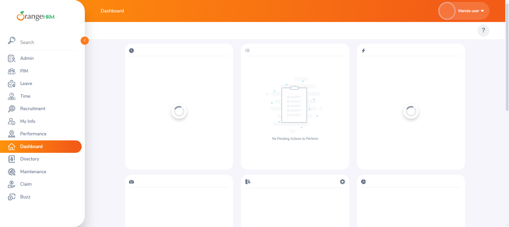When I click on the Leave tabhooks.CucumberHooks.takeScrenshot(io.cucumber.java.Scenario)image
Given I am on the dashboard pagehooks.CucumberHooks.takeScrenshot(io.cucumber.java.Scenario)image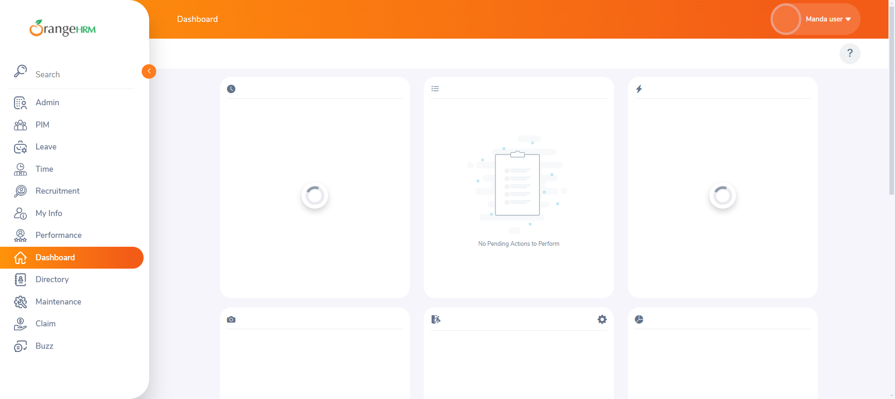When I click on the Leave tabhooks.CucumberHooks.takeScrenshot(io.cucumber.java.Scenario)image And I click on the My Leave optionhooks.CucumberHooks.takeScrenshot(io.cucumber.java.Scenario)image
And I click on the My Leave optionhooks.CucumberHooks.takeScrenshot(io.cucumber.java.Scenario)image Then I should see the My Leave List pagehooks.CucumberHooks.takeScrenshot(io.cucumber.java.Scenario)image
Then I should see the My Leave List pagehooks.CucumberHooks.takeScrenshot(io.cucumber.java.Scenario)image When I fill out the Leave list form and not entering EmployeeNamehooks.CucumberHooks.takeScrenshot(io.cucumber.java.Scenario)image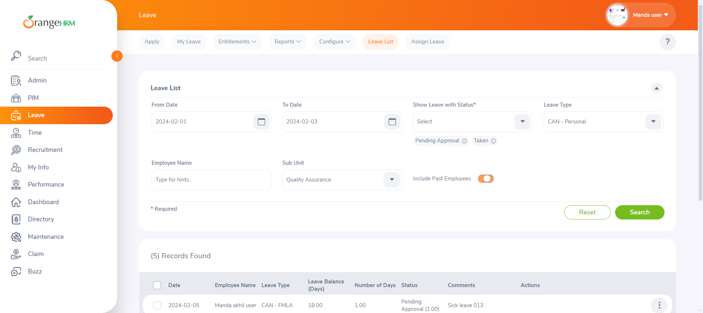And I hit on Search buttonhooks.CucumberHooks.takeScrenshot(io.cucumber.java.Scenario)imageThen I should see the leave list records with out enter namehooks.CucumberHooks.takeScrenshot(io.cucumber.java.Scenario)image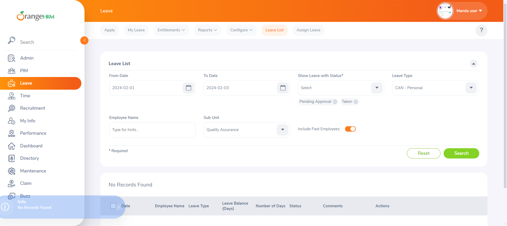
When I fill out the Leave list form and not entering EmployeeNamehooks.CucumberHooks.takeScrenshot(io.cucumber.java.Scenario)image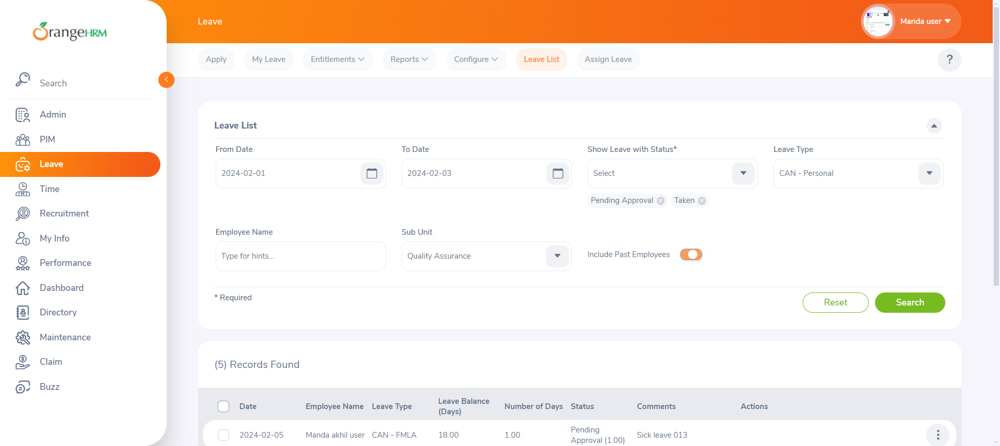And I hit on Search buttonhooks.CucumberHooks.takeScrenshot(io.cucumber.java.Scenario)imageThen I should see the leave list records with out enter namehooks.CucumberHooks.takeScrenshot(io.cucumber.java.Scenario)image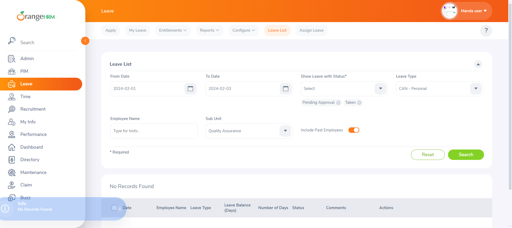 -
Timesheet
5:18:23 pm / 00:02:34:698 Fail
Timesheet
04.11.2024 5:18:23 pm 04.11.2024 5:20:58 pm 00:02:34:698 · #test-id=227FailUser wants to see timesheet of the employeeGiven User is on LoginPagehooks.CucumberHooks.takeScrenshot(io.cucumber.java.Scenario)image When User enter valid username and passwordhooks.CucumberHooks.takeScrenshot(io.cucumber.java.Scenario)image
When User enter valid username and passwordhooks.CucumberHooks.takeScrenshot(io.cucumber.java.Scenario)image And click on Login buttonhooks.CucumberHooks.takeScrenshot(io.cucumber.java.Scenario)image
And click on Login buttonhooks.CucumberHooks.takeScrenshot(io.cucumber.java.Scenario)image Then User is redirected to Homepage of OrangeHRMhooks.CucumberHooks.takeScrenshot(io.cucumber.java.Scenario)image
Then User is redirected to Homepage of OrangeHRMhooks.CucumberHooks.takeScrenshot(io.cucumber.java.Scenario)image Given I am on the dashboard pagehooks.CucumberHooks.takeScrenshot(io.cucumber.java.Scenario)imageGiven user is on Timesheet pagehooks.CucumberHooks.takeScrenshot(io.cucumber.java.Scenario)image
Given I am on the dashboard pagehooks.CucumberHooks.takeScrenshot(io.cucumber.java.Scenario)imageGiven user is on Timesheet pagehooks.CucumberHooks.takeScrenshot(io.cucumber.java.Scenario)image When user enter employee namehooks.CucumberHooks.takeScrenshot(io.cucumber.java.Scenario)image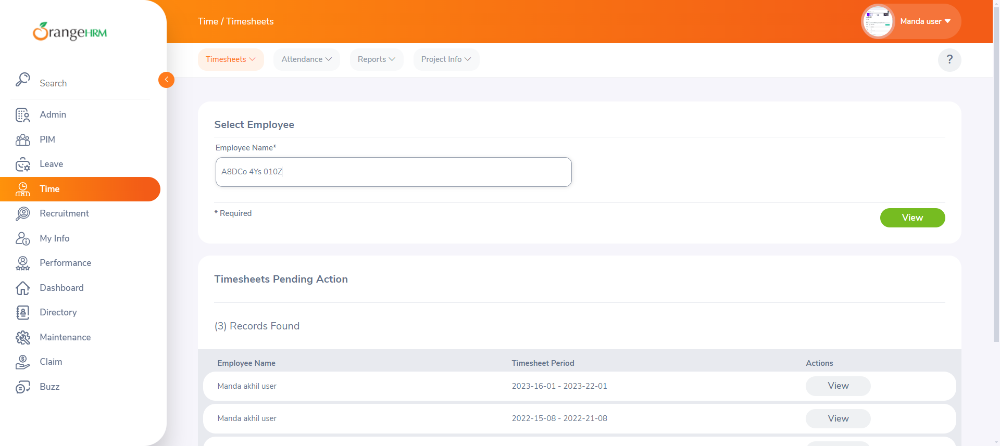And click on viewhooks.CucumberHooks.takeScrenshot(io.cucumber.java.Scenario)image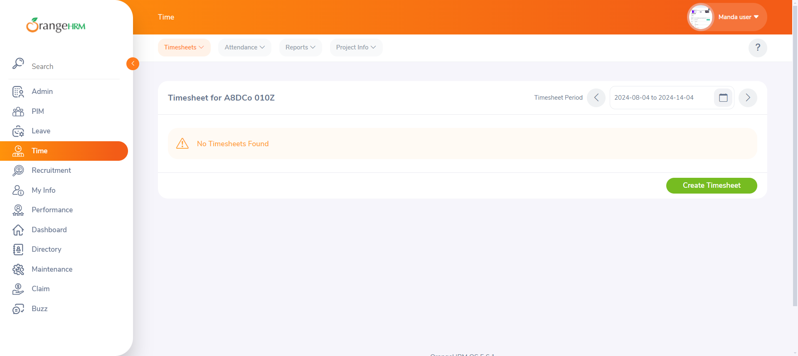Then user should see the timesheet records of employeeStep skippedPassUser want to see project reportsGiven User is on LoginPagehooks.CucumberHooks.takeScrenshot(io.cucumber.java.Scenario)image
When user enter employee namehooks.CucumberHooks.takeScrenshot(io.cucumber.java.Scenario)image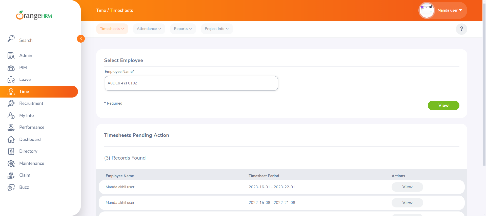And click on viewhooks.CucumberHooks.takeScrenshot(io.cucumber.java.Scenario)image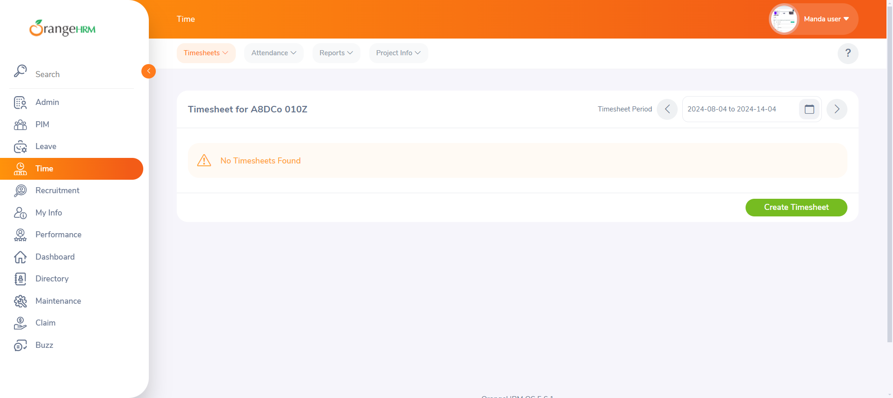Then user should see the timesheet records of employeeStep skippedPassUser want to see project reportsGiven User is on LoginPagehooks.CucumberHooks.takeScrenshot(io.cucumber.java.Scenario)image When User enter valid username and passwordhooks.CucumberHooks.takeScrenshot(io.cucumber.java.Scenario)image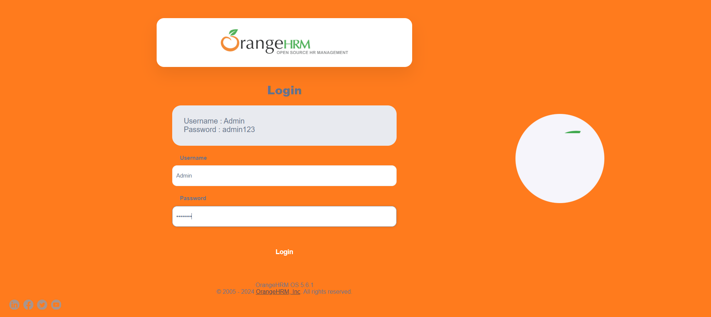And click on Login buttonhooks.CucumberHooks.takeScrenshot(io.cucumber.java.Scenario)image
When User enter valid username and passwordhooks.CucumberHooks.takeScrenshot(io.cucumber.java.Scenario)image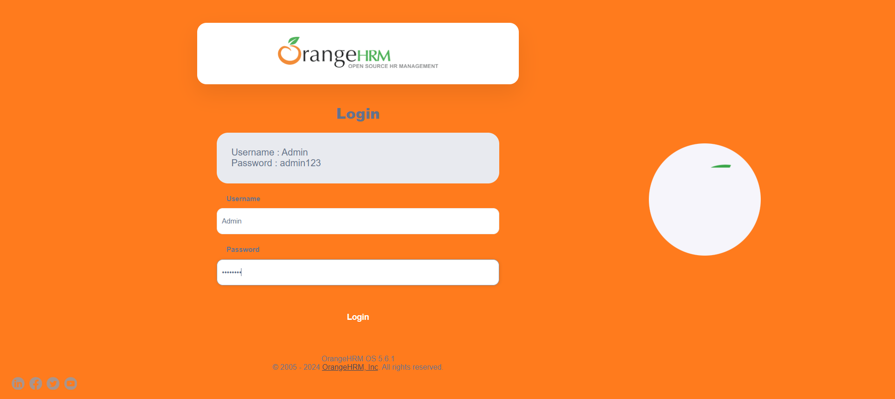And click on Login buttonhooks.CucumberHooks.takeScrenshot(io.cucumber.java.Scenario)image Then User is redirected to Homepage of OrangeHRMhooks.CucumberHooks.takeScrenshot(io.cucumber.java.Scenario)image
Then User is redirected to Homepage of OrangeHRMhooks.CucumberHooks.takeScrenshot(io.cucumber.java.Scenario)image Given I am on the dashboard pagehooks.CucumberHooks.takeScrenshot(io.cucumber.java.Scenario)imageGiven user is on Timesheet pagehooks.CucumberHooks.takeScrenshot(io.cucumber.java.Scenario)image
Given I am on the dashboard pagehooks.CucumberHooks.takeScrenshot(io.cucumber.java.Scenario)imageGiven user is on Timesheet pagehooks.CucumberHooks.takeScrenshot(io.cucumber.java.Scenario)image Given user is on Reports pagehooks.CucumberHooks.takeScrenshot(io.cucumber.java.Scenario)image
Given user is on Reports pagehooks.CucumberHooks.takeScrenshot(io.cucumber.java.Scenario)image When User enter Project name and project data rangehooks.CucumberHooks.takeScrenshot(io.cucumber.java.Scenario)image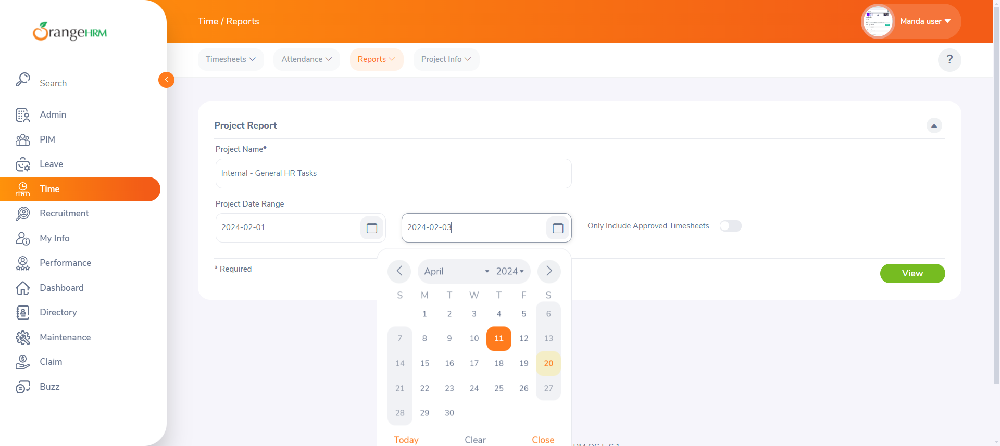And click on view buttonhooks.CucumberHooks.takeScrenshot(io.cucumber.java.Scenario)image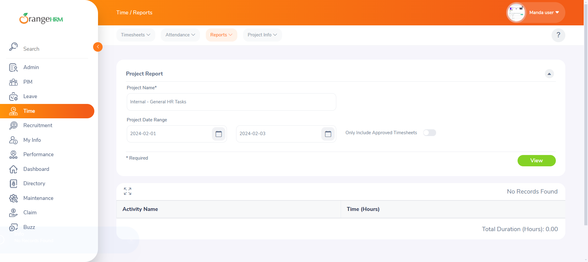Then user should see the projects reportshooks.CucumberHooks.takeScrenshot(io.cucumber.java.Scenario)image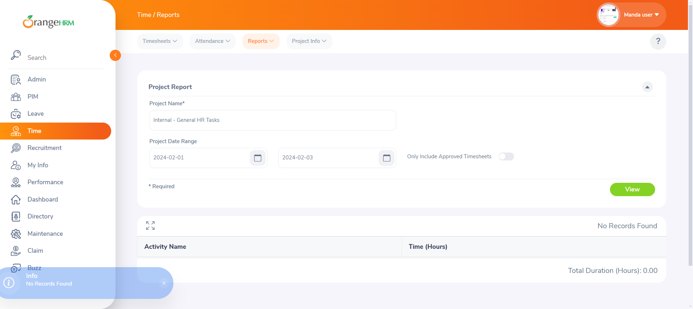FailUser want to see employee reportsGiven User is on LoginPagehooks.CucumberHooks.takeScrenshot(io.cucumber.java.Scenario)image
When User enter Project name and project data rangehooks.CucumberHooks.takeScrenshot(io.cucumber.java.Scenario)image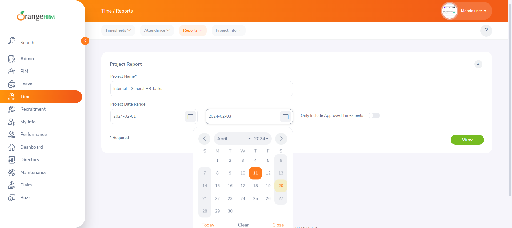And click on view buttonhooks.CucumberHooks.takeScrenshot(io.cucumber.java.Scenario)image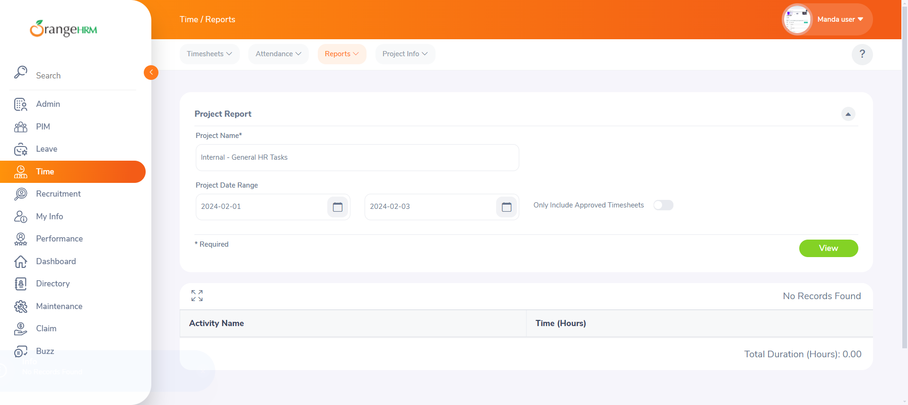Then user should see the projects reportshooks.CucumberHooks.takeScrenshot(io.cucumber.java.Scenario)image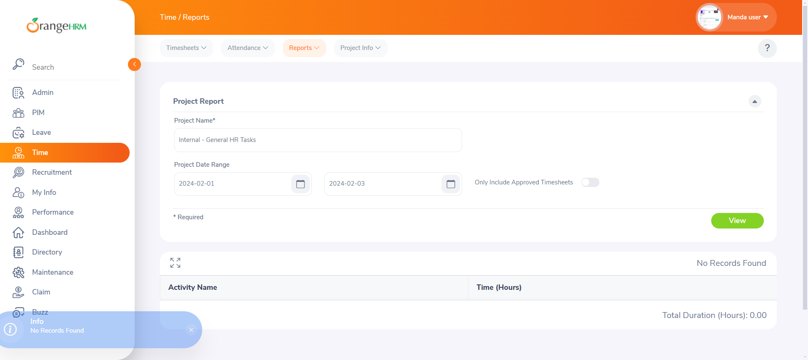FailUser want to see employee reportsGiven User is on LoginPagehooks.CucumberHooks.takeScrenshot(io.cucumber.java.Scenario)image When User enter valid username and passwordhooks.CucumberHooks.takeScrenshot(io.cucumber.java.Scenario)image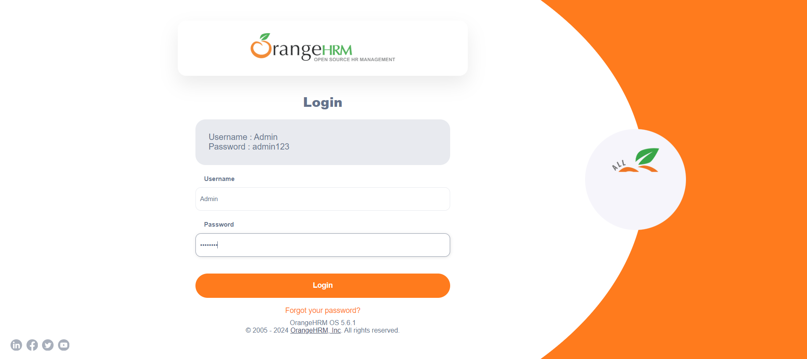And click on Login buttonhooks.CucumberHooks.takeScrenshot(io.cucumber.java.Scenario)image
When User enter valid username and passwordhooks.CucumberHooks.takeScrenshot(io.cucumber.java.Scenario)image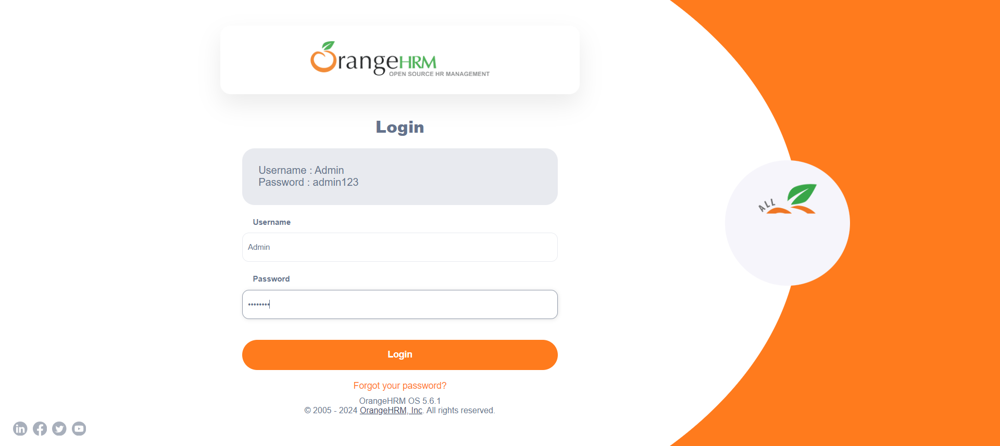And click on Login buttonhooks.CucumberHooks.takeScrenshot(io.cucumber.java.Scenario)image Then User is redirected to Homepage of OrangeHRMhooks.CucumberHooks.takeScrenshot(io.cucumber.java.Scenario)image
Then User is redirected to Homepage of OrangeHRMhooks.CucumberHooks.takeScrenshot(io.cucumber.java.Scenario)image Given I am on the dashboard pagehooks.CucumberHooks.takeScrenshot(io.cucumber.java.Scenario)imageGiven user is on Timesheet pagehooks.CucumberHooks.takeScrenshot(io.cucumber.java.Scenario)image
Given I am on the dashboard pagehooks.CucumberHooks.takeScrenshot(io.cucumber.java.Scenario)imageGiven user is on Timesheet pagehooks.CucumberHooks.takeScrenshot(io.cucumber.java.Scenario)image Given user is on the Reports pagehooks.CucumberHooks.takeScrenshot(io.cucumber.java.Scenario)image
Given user is on the Reports pagehooks.CucumberHooks.takeScrenshot(io.cucumber.java.Scenario)image When User enter Employee name and Project name and project data rangehooks.CucumberHooks.takeScrenshot(io.cucumber.java.Scenario)image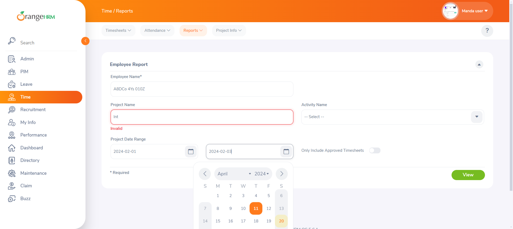And click on the view buttonhooks.CucumberHooks.takeScrenshot(io.cucumber.java.Scenario)image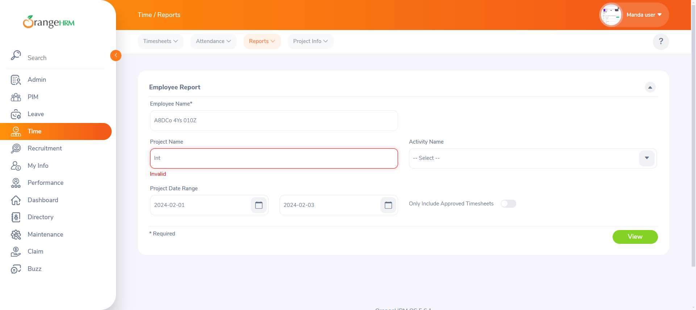Then user should see the employee reportsStep skippedPassUser want to edit customer records from project infoGiven User is on LoginPagehooks.CucumberHooks.takeScrenshot(io.cucumber.java.Scenario)image
When User enter Employee name and Project name and project data rangehooks.CucumberHooks.takeScrenshot(io.cucumber.java.Scenario)image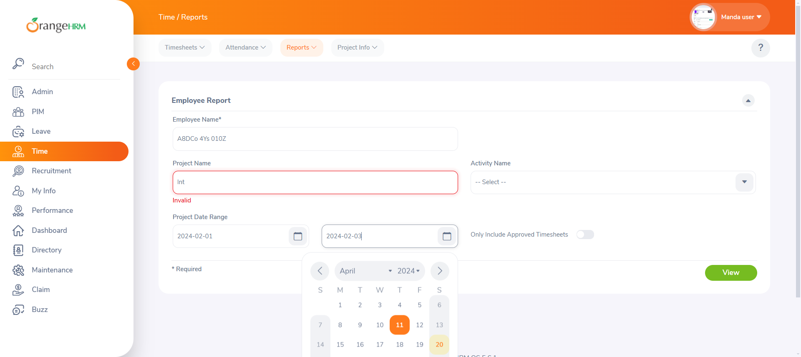And click on the view buttonhooks.CucumberHooks.takeScrenshot(io.cucumber.java.Scenario)image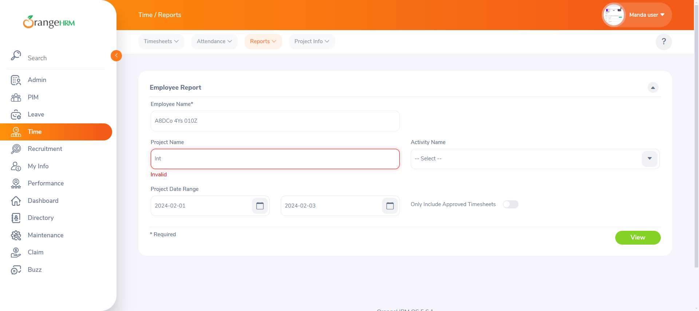Then user should see the employee reportsStep skippedPassUser want to edit customer records from project infoGiven User is on LoginPagehooks.CucumberHooks.takeScrenshot(io.cucumber.java.Scenario)image When User enter valid username and passwordhooks.CucumberHooks.takeScrenshot(io.cucumber.java.Scenario)image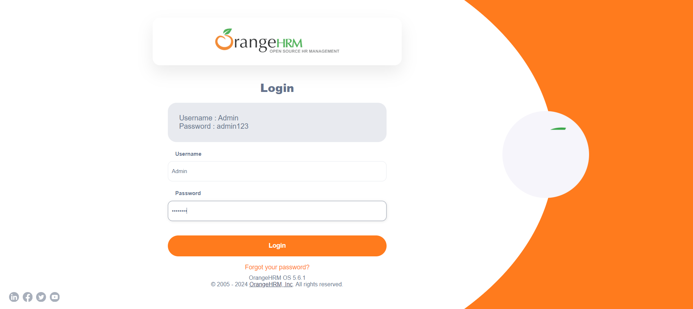And click on Login buttonhooks.CucumberHooks.takeScrenshot(io.cucumber.java.Scenario)image
When User enter valid username and passwordhooks.CucumberHooks.takeScrenshot(io.cucumber.java.Scenario)image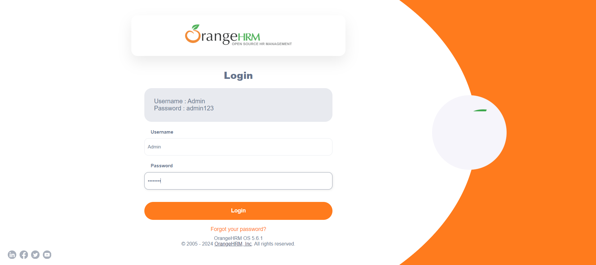And click on Login buttonhooks.CucumberHooks.takeScrenshot(io.cucumber.java.Scenario)image Then User is redirected to Homepage of OrangeHRMhooks.CucumberHooks.takeScrenshot(io.cucumber.java.Scenario)image
Then User is redirected to Homepage of OrangeHRMhooks.CucumberHooks.takeScrenshot(io.cucumber.java.Scenario)image Given I am on the dashboard pagehooks.CucumberHooks.takeScrenshot(io.cucumber.java.Scenario)imageGiven user is on Timesheet pagehooks.CucumberHooks.takeScrenshot(io.cucumber.java.Scenario)image
Given I am on the dashboard pagehooks.CucumberHooks.takeScrenshot(io.cucumber.java.Scenario)imageGiven user is on Timesheet pagehooks.CucumberHooks.takeScrenshot(io.cucumber.java.Scenario)image Given user is on project info pagehooks.CucumberHooks.takeScrenshot(io.cucumber.java.Scenario)image
Given user is on project info pagehooks.CucumberHooks.takeScrenshot(io.cucumber.java.Scenario)image When user click on edit icon in found recordshooks.CucumberHooks.takeScrenshot(io.cucumber.java.Scenario)image
When user click on edit icon in found recordshooks.CucumberHooks.takeScrenshot(io.cucumber.java.Scenario)image And edit customer name and descriptionhooks.CucumberHooks.takeScrenshot(io.cucumber.java.Scenario)image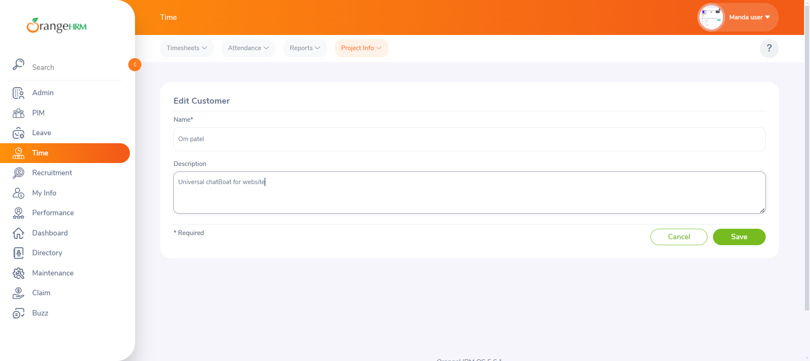And click on savehooks.CucumberHooks.takeScrenshot(io.cucumber.java.Scenario)image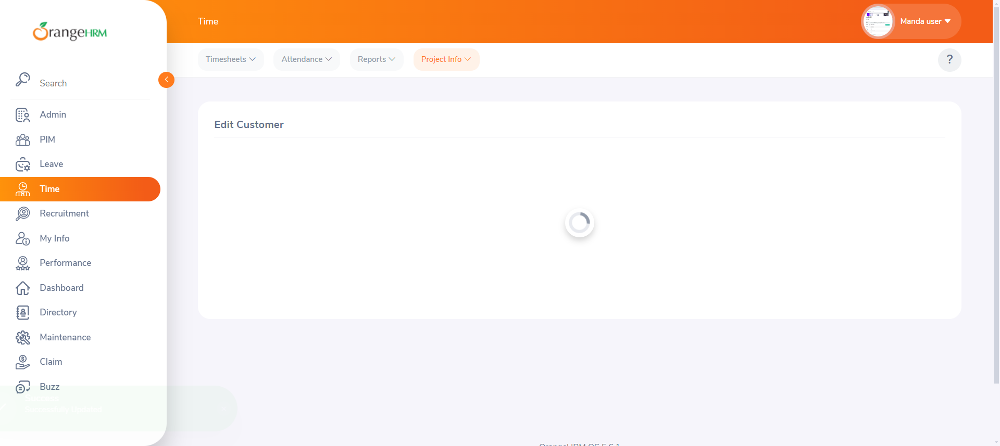Then user should see the successful messagehooks.CucumberHooks.takeScrenshot(io.cucumber.java.Scenario)image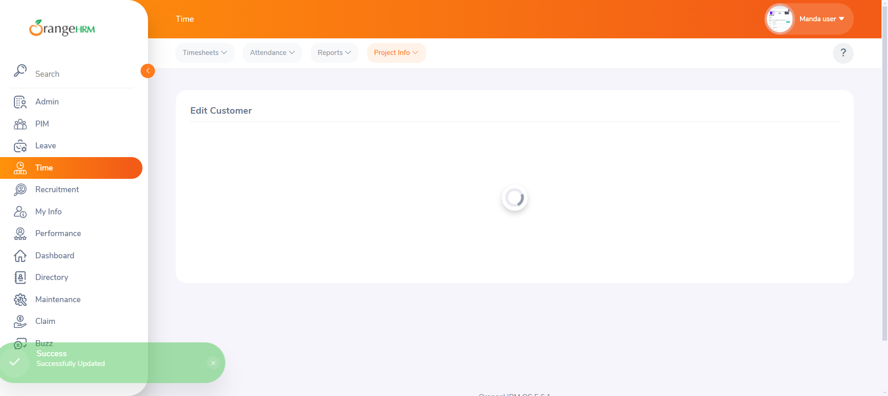
And edit customer name and descriptionhooks.CucumberHooks.takeScrenshot(io.cucumber.java.Scenario)image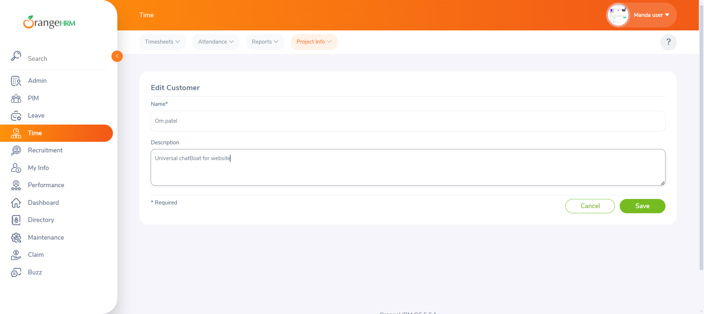And click on savehooks.CucumberHooks.takeScrenshot(io.cucumber.java.Scenario)image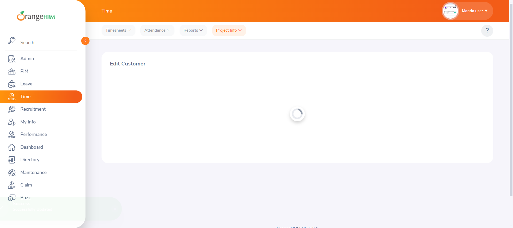Then user should see the successful messagehooks.CucumberHooks.takeScrenshot(io.cucumber.java.Scenario)image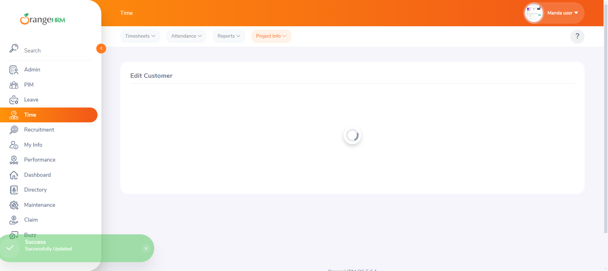
-
org.openqa.selenium.NoSuchElementException
3 tests
org.openqa.selenium.NoSuchElementException
3 failedStatus Timestamp TestName Fail 17:17:00 pm Then I should see an error message Leave Page.Entering invalid From date and To date.Then I should see an error messageFail 17:18:43 pm And click on view Timesheet.User wants to see timesheet of the employee.And click on viewFail 17:20:04 pm And click on the view button Timesheet.User want to see employee reports.And click on the view button
-
@login11
14 tests
@login11
11 passed 3 failedStatus Timestamp TestName Pass 17:14:45 pm User login with invalid username and password Login into portal.User login with invalid username and passwordPass 17:14:58 pm User login with valid username and password Login into portal.User login with valid username and passwordPass 17:15:07 pm Search Leave Leave Page.Search LeavePass 17:15:25 pm Entering valid From date and To date Leave Page.Entering valid From date and To datePass 17:15:53 pm Entering valid From date and To date Leave Page.Entering valid From date and To datePass 17:16:28 pm Entering valid From date and To date Leave Page.Entering valid From date and To dateFail 17:16:49 pm Entering invalid From date and To date Leave Page.Entering invalid From date and To datePass 17:17:28 pm Show Leave with Status is not Selected Leave Page.Show Leave with Status is not SelectedPass 17:17:51 pm Search leave list records Leave List.Search leave list recordsPass 17:18:08 pm Search leave list records with out enter name Leave List.Search leave list records with out enter nameFail 17:18:23 pm User wants to see timesheet of the employee Timesheet.User wants to see timesheet of the employeePass 17:19:18 pm User want to see project reports Timesheet.User want to see project reportsFail 17:19:44 pm User want to see employee reports Timesheet.User want to see employee reportsPass 17:20:28 pm User want to edit customer records from project info Timesheet.User want to edit customer records from project info
Started
Apr 11, 2024 05:14:43 pm
Ended
Apr 11, 2024 05:20:59 pm
Features Passed
2
Features Failed
2
Features
Scenarios
Steps
Timeline
Tags
| Name | Passed | Failed | Skipped | Others | Passed % |
|---|---|---|---|---|---|
| @login11 | 11 | 3 | 0 | 0 | 78.571% |
System/Environment
| Name | Value |
|---|---|
| Engineer | meet |
| Project | CucumberFramework |
| Browser | Google Chrome |
| os | windows |